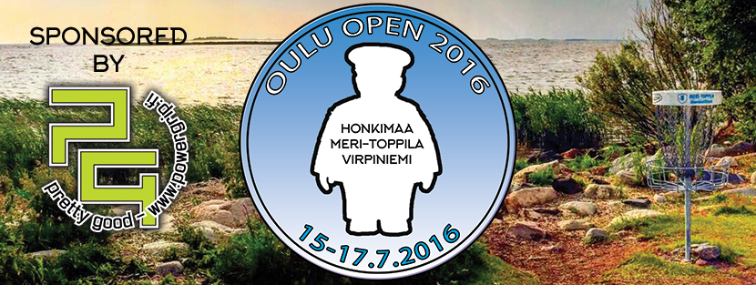

Kisakone

Oulu Open - Pohjoisen Haastavin Kisa
Oulu Open jatkaa edellisvuoden malliin kolmipäiväisenä kisana. Kilpailun toinen ja kolmas päivä pelataan tuttuun tapaan Toppilassa ja Virpiniemessä, mutta aloituspäivä pelataan tänä vuonna uudessa paikassa, Honkimaan radalla. Muuten kisa järjestetään samalla konseptilla kuin ennenkin. Jokainen päivä pelataan väliaikalähdöin ja pelaajille on käytössä kisan aikana player's lounge, josta voi napata hiukopalaa ja juotavaa. Kisat käydään 15-17.7.2016.
Kisan järjestävät yhteistyössä BSC Disc Golf Team ry ja Oulun Frisbeeseura ry.
Kuten aiempinakin vuosina, kisan sponsorina toimii Powergrip - Melko Hyvä Frisbeekauppa.
Virtuaalinen pelaajakokous nyt luettavissa!
<- Sivupalkissa! Lue!
Radat
Alustavat ratakartat ovat nähtävissä Radat-sivulla. Tänä vuonna pelataan seuraavilla radoilla:
Honkimaa
Kisan aloitus käydään Kiimingissä Honkimaan radalla. Honkimaan rata on kokenut lyhyen taipaleensa aikana useita isompia ja pienempiä muutoksia, joiden ansiosta se erottuu omakseen Oulun muista radoista. Haastetta tuovat esimerkiksi korotetut korit, joita radalla on jopa kolme. Siinä missä radan alkupää mennään metsän keskellä kuljetaan jälkimmäinen puolisko Honkimaan lenkkipolkujen lomassa. Seassa on sopivan vaihtelevasti pitkää siivutusta ja tarkkaa neppailua.
Toppila
Toppila on maastoltaan haastava ja yleisöystävällinen, eikä ole ihme, että Toppila on saanut kunnian toimia vuosien 2011 ja 2014 SM-kisojen näyttämönä. Vuonna 2016 Toppilassa pelataan EM-kisat, jotka esittelevät Oulun ylpeyden todella laajalle yleisölle. Kokemattomalle pelaajalle legendaariset Toppila-tuulet voivat tehdä tepposensa esimerkiksi pahamaineisella rantaväylällä, jossa kori on asetettu liki rantaviivaan. Kisassa pelataan muokattua rataa, joka pitää sisällään tuttuja normiradan ja SM-ratojen klassikoita.
Virpiniemi
Kisan päättää ansaitusti Virpiniemi Disc Golf Park. Lenkkipolkujen ja mäkihyppytornin ympärille rakennetun radan yleisilme on metsäinen, mutta korkeusvaihteluitakaan ei ole unohdettu. Virpiniemessä pelattiin vuonna 2013 EuroTourin osakilpailu Finnish Open, jossa taitojaan väläytti nykyään jenkkilää valloittava Simon Lizotte. Virpiniemen kisarata poikkeaa vakioradasta muutaman väylän verran ja on edellisvuosien Oulu Open -kävijöille tuttu.
Osallistuminen
Kisassa järjestetään Pro-luokat MPO, MPM, MPG ja FPO sekä amatööriluokat MJ1, MA1, MA3 ja FA1. Osallistumismaksu Pro-luokkiin on 35 euroa ja amatööriluokkiin 25 euroa. Kisaan mahtuu 144 pelaajaa. Järjestäjät varaavat 12 villiä korttia.
Ilmoittautuminen alkaa 17.4. kello 18:15. Ilmoittautumisprosessi on seuraava:
- Luokkakiintiöt puretaan 15.5. ja tässä ensimmäisessä vaiheessa maksujen tulee olla perillä 30.5. mennessä.
- Maksamattomat poistetaan kisasta 31.5., jonka jälkeen jonosta noustaan kisaan mukaan.
- Tässä toisessa vaiheessa kisaan päässeiden maksujen tulee olla perillä 20.6. mennessä.
- Toisen vaiheen jälkeen maksamattomat poistetaan 21.6., jonka jälkeen alkaa ilmoittautumisen viimeinen vaihe.
- Ilmoittautuminen suljetaan 8.7. kello 18:00. ja lopullinen osallistujalista on tiedossa 11.7.
Ilmoittautumisajan sulkeutumisen jälkeen tulleista perumisista ei palauteta kisamaksua muuten kuin lääkärintodistuksella, joka on esitettävä ennen kisan alkua.
Osallistumiseen vaaditaan SFL:n kisalisenssi.
Palkinnot
Payout Pro-luokissa on 80% ja amatööriluokissa 50%. Palkinnoille pääsee pro-luokissa top 25% ja amatööriluokissa top 20%. Jokaisen luokan top3:ssa palkinnoille päässeet saavat mukaansa myös muistopalkinnon. Amatööriluokissa palkinnot ovat tavarapalkintoja ja/tai lahjakortteja. Pro-luokissa palkinnoille päässeet voivat valita rahapalkinnon sijaan lahjakortin.
Kilpailun pääsponsori Powergrip toimittaa kaikki lahjakortit ja tavarapalkinnot ja tarjoaa lisäksi sivukisoihin 200 euron arvosta palkintoja!
Payoutit luokittain:
MPO
1. 244
2. 170
3. 122
4. 89
5. 77
6. 61
7. 49
MPM
1. 184
2. 116
3. 85
4. 63
MPG
1. 140
2. 84
FPO
1. 56
MA1
1. 132
2. 92
3. 62
4. 48
5. 38
6. 28
FA1
1. 25
MJ1
1. 86
2. 52
MA3
1. 122
2. 83
3. 57
4. 42
5. 34
Toiminta kisapäivänä
Jokaisen pelaajan tulee ilmoittautua paikalleolevaksi viimeistään 10 minuuttia ennen ilmoitettua lähtöaikaansa kisakeskuksessa. Mikäli rata ei ole tuttu, on suotavaa tulla tutustumaan ratakarttaan jo tätä ennen. Ennen kierrosta lämmittely on sallittua vain erikseen osoitetuilla lämmittelyalueilla. Kierroksen jälkeen tuloskortit palautetaan, kierroksen kokonaistulos laskettuna, kisakeskukseen viivyttelemättä. Tupakointi on sallittua vain ennen kierrosta ja sen jälkeen, odotellessa väylän vapautumista ja siirtymillä, ei koskaan kesken väylän pelaamisen.
| Nimi | Oulu Open 2016 sponsored by Powergrip |
| Järjestäjä | BSC Discgolf Team Ry |
| Paikka | Oulu, Honkimaa/Toppila/Virpiniemi |
| Aika | 15. - 17.07.2016 |
| Taso | Erilliskilpailu |
| Yhteystiedot | moc.flogcsidcsb)ta(inuoj / nenituunK inuoJ DT |
| Kilpailu PDGA:n sivuilla | http://www.pdga.com/tour/event/28551 |
Aikataulu
Kilpailussa käytetään porrastettua lähtöä. Ryhmän kaikkien kilpailijoiden tulee ilmoittautua viimeistään 10 minuuttia ennen ryhmän lähtöaikaa. Ensimmäiset ryhmät lähtevät perjantaina kello 9:30 ja lauantaina ja sunnuntaina kello 9:00.
| Kierros | Lähtöaika |
|---|---|
| Kierros 1 | 15.07.2016 09:30 |
| Kierros 2 | 16.07.2016 09:00 |
| Kierros 3 | 17.07.2016 09:00 |
Ajankohtaiset uutiset
Palkinnot maksettu ja kisa paketissa
Kisan rahapalkinnot on nyt maksettu ja lahjakortit tilattu Powergripiltä! Kisa alkaakin tätä myöten olla paketissa. Kiitos Joni, Ilpo, Juuso, Tommi, Erno, Johan, Kajsa, Kimmo, Juho, Kristian, sekä tietysti Pasi ja Petteri Powergripiltä! Ilman teitä nämä kisat eivät olisi onnistuneet.
Kiitos myös kaikille kisaajille ja onnittelut voittajille! Palaamme asiaan taas ensi vuonna!
Parikisojen tuloksia Toppilasta ja Virpiniemestä
Toppilan parikisan tulokset:
1. Alatalo&Ylätalo 45 180€
2. Reijasalo&Poikonen 46 90€
2. Koski&Männistö 46 90€
4. Paloniemi&Haapalainen 47
5. Holappa&Kälkäjä 49
6. Eskelinen&Engström 50
6. Verronen&Naukkarinen 50
6. Kostet&Anttila 50
9. Ahola&Pasanen 51
9. Immonen&Vainionpää 51
9. Mutikainen&Åström 51
12. Kivelä&Hanski 52
12. Koskinen&Lehtonen 52
12. Parkkisenniemi&Komulainen 52
12. Nurminen&Nylund 52
12. Manninen&Schroderus 52
17. Huhtamäki&Silkamo 53
18. Räinä&Määttä 54
18. Ahola&Alapoikela 54
18. Tolppanen&Isojärvi 54
18. Alajuuma&Kiviahde 54
18. Rekilä&Komulainen 54
23. Jormanainen&Rämä 55
23. Arola&Luukas 55
25. Korhonen&Salminen 56
25. Korhonen&Niskanen 56
27. Jaako&Jaako 57
27. Riekki&Riekki 57
27. Korkiakoski&Tuomisalo 57
27. Tolonen&Jaakkonen 57
31. Ylitalo&Torvi 59
31. Koskinen&Hauskanen 59
33. Ypyä&Kosamo 61
33. Tuomainen&Ervasti 61
35. Luoto&Heinonen 62
36. Joutsen&Salonen DNF
Virpiniemen parikisan tulokset:
1. Ylätalo & Tyni -12
2. Aho & Reijasalo -11
2. Pasanen & Poikonen -11
2. Komulainen & Parkkisenniemi -11
5. Laurinolli & Ollikainen -10
6. Ahola & Kuisma -7
6. Kaikkonen & Kälkäjä -7
8. Kostet & Anttila -6
8. Joutsen & Naukkarinen -6
10. Verronen & Salonen -4
10. Kalaoja & Räsänen -4
12. Luukkanen & Hanski -3
12. Korkiakoski & Tuomisalo -3
12. Engström & Eskelinen -3
12. Kemppainen & Mulari -3
16. Kössi & Hyvönen -2
16. Kiviahde & Kiviahde -2
18. Ahola & Luukas -1
19. Korpinen & Laine 0
20. Sipola & Rehnbäck +1
Parikisailua Honkimaalla torstaina 14.7.
Torstaina 14.7.2016 illalla järjestetään Honkimaalla kaikille avoin parikisa Oulu Open 2016 muutetulla radalla. Parikisaan ei vaadita lisenssiä. Kisan speksit:
- Lähdot klo 15-18 aina, kun kaksi paria on valmiina lähtemään
- Osallistumismaksu 10 euroa/pari
- Payout 100%, top 25% pareista palkitaan
- Kisassa on vain yksi luokka
- Sekaparit saavat 3 heittoa tasoitusta - naisparit saavat 6 heittoa tasoitusta
- Pelimuotona best shot
Kisan TD:nä toimii Ilpo Tolonen. Ilmoittautumiset kisakeskuksella.
Parikisaan osallistui 32 paria.
Keli oli hieno ja ymmärtääkseni pelaajatkin viihtyivät radalla.
Palkitut ottakaa yhteys td:hen, niin saadaan palkinnot jaettua!
Td Kiittää osallistujia.
Tässä tulokset:

Toteutuneet palkinnot ja niiden saajat
Tässäpä toteutuneet palkintosummat ja niiden saajat. Joitakin tasasijoja tuli ja siten meni rahoja jakoon useammalle. Pari selitystä kuitenkin summiin: Ennen väylän 17 mitätöintia kaikkia amatöörisarjojen muistipalkinnot ehdittiin jakaa ja pelaajille oli jo ilmoitettu palkintosummat kaikkien sijojen osalta. MA1:ssä Laurikainen ja Räinä olivat tasatuloksessa ja siten sijojen 4. ja 5. rahat olivat menossa jakoon heidän kesken. Tästä tulee Räinän summa 43e. Väylän 17 mitätöinnin jälkeen Laurikainen nousi tasatulokseen Riihimäen kanssa, joten normaalitilanteessa heidän kuuluisi jakaa sijojen 3 ja 4 palkinnot, tästä tulee Laurikaisen summa 55e. Riihimäki kuitenkin sijoittui ennen mitätöintiä yksin kolmanneksi, joten hän saa koko kolmannelle sijalle kuuluvan summan 62e. MA3:ssa myöskin sija 5 ja sen 34 euron palkintosumma meni jakoon ennen väylän 17 mitätöintiä Parkkisenniemen ja Aholan välillä, mutta mitätätöinnin jälkeen Ahola tipahti yksin sijalle 6. Ahola saa kuitenkin 17e, eli sen palkinnon joka olisi jaetusta viidennestä sijasta tullut. Toivon mukaan nämä ratkaisut tyydyttävät kaikkia.
MPO
1. 244e Hannu Ansala
2. 146e Ville Puikko
2. 146e Ilari Moisala
4. 83e Niko Aho
4. 83e Pyry Joutsen
6. 61e Jaakko Alatalo
7. 10e Onni Salonen
7. 10e Ville Kilpijärvi
7. 10e Henri Koivumaa
7. 10e Jukka Tyni
7. 10e Jarkko Naukkarinen
MPM
1. 184e Jouni Huhtamäki
2. 116e Jori Löytynoja
3. 85e Jukka Määttä
4. 63e Mika Kumpula
MPG
1. 140e Jari Niskanen
2. 84e Eero Savilaakso
FPO
1. 56e Jenni Eskelinen
MA1
1. 132e Saku Poikonen
2. 92e Antti Turpeinen
3. 62e Reima Riihimäki
3. 55e Janne Laurikainen
5. 43e Jouni Räinä
6. 14e Antti Rautio
6. 14e Samuli Koskinen
FA1
1. 25e Paula Määttä
MJ1
1. 86e Eemeli Nurminen
2. 52e Anton Komulainen
MA3
1. 122e Petteri Nikkinen
2. 83e Mika Härkönen
3. 57e Eero Soronen
4. 42e Janne Martimo
5. 34e Eetu Parkkisenniemi
6. 17e Johan Ahola
Kisat pelattu loppuun myrskyn keskellä
Kisat tuli pelattua loppuun myrskyn keskellä. Ukkosen vuoksi peli jouduttiin hetkeksi keskeyttämään useamman pro-sarjan heittueen ollessa vielä radalla. Runsaan sateen vuoksi väylä 17 jouduttiin mitätöimään kaikilta, sillä kyseisen väylän tii joutui niin pahasti veden varaan, että tiiltä heittäminen oli mahdotonta. Myöskään tiin takaa heittäminen ei olisi ollut oikeudenmukaista tiin sijoittelun takia. Peliä saatiin kuitenkin jatkettua ja voittajat ratkottua ja tulokset löytyvät Tulokset-sivulta. Onnea kaikille palkinnoile päässeille koko järjestelyporukan puolesta! Lopulliset palkintosummat päivitetään kisakoneeseen piakkoin.
Päivän sivukisassa, CTP väylällä 7, voiton vei Tero Moilanen tuloksella 98cm. Voitosta Tero sai kotia mukaansa sponsorimme Powergripin lahjoittaman Haltin repun. Onnea!